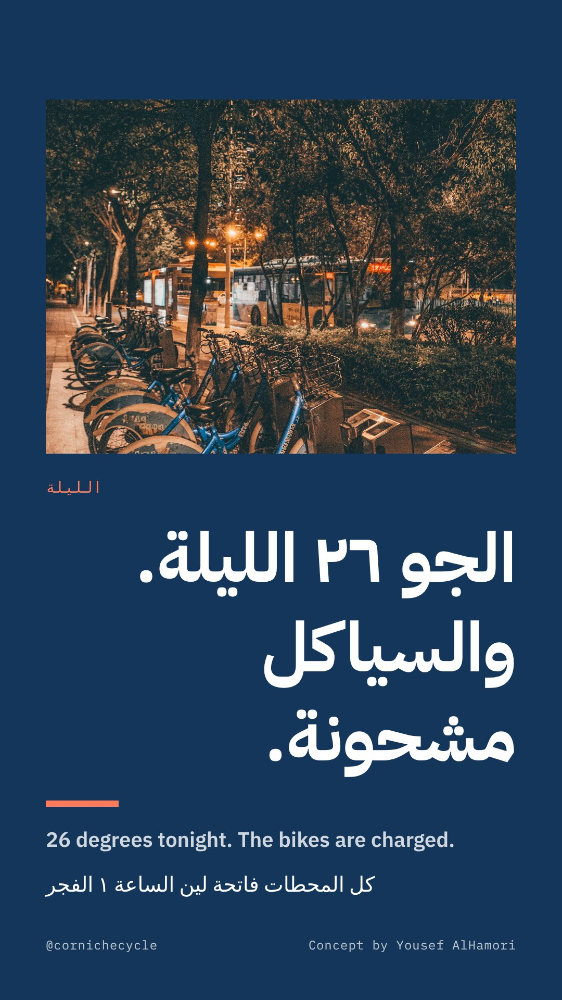
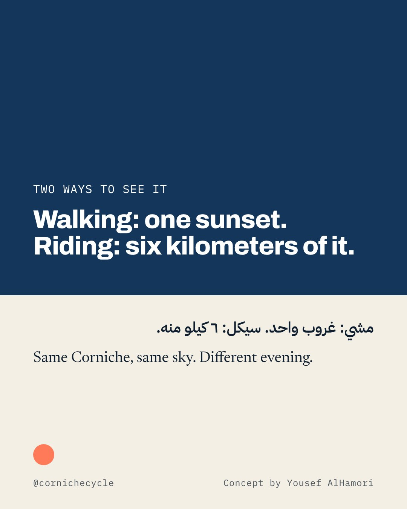
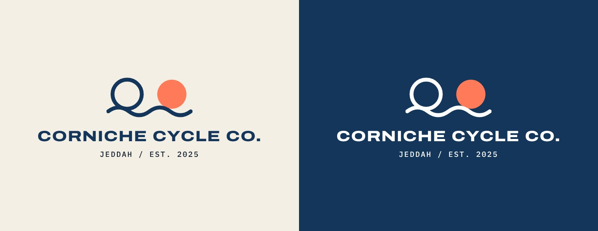

Route 01 is live. Save it, grab two friends, and be at Al Hamra station 20 minutes before Maghrib 🌅 #لفة_المغرب #JeddahCorniche #cornichecycle
Route Cards pillar: a saveable plan that drives evening rentals.
Corniche Cycle Co. sells the sunset ride, not the rental rate, with a nightly Maghrib lap.
Corniche Cycle Co. has great stations but posts price flyers. This concept turns the 6 km stretch from Al Hamra to the Floating Mosque into a named ride people want to film. The Sunset Lap gives riders a reason to come back every winter evening and share it.
Corniche Cycle Co. is a fictional brand I invented for this exercise. Names, prices and situations are made up; the research findings are real.
Three posts from the campaign, each with the caption as it would go out and the job it does. Photos are free stock images from Unsplash, standing in for a real shoot.


What the brand already does well on social, and the openings this plan goes after.

Grow weekday evening rentals by 30% from November to February, tracked through campaign codes and Night Pass sales.
Jeddah friend groups aged 18 to 30 who meet on the Corniche after Maghrib and film the sunset on their phones.
Everyone films the Corniche sunset, but standing still it looks like every other sunset.
Grow weekday evening rentals by 30% from November to February, tracked through campaign codes and Night Pass sales.
Handlebar and chest cam footage of the Corniche at golden hour and night.
Named routes with distance, time, best stop and the station to start from.
Riders, families and station staff, filmed with permission, telling why they ride.
Weather, events and station availability for the same evening.
| Platform | Role | Cadence |
|---|---|---|
| Hero Reels of the ride and saveable route cards. | 4 Reels per week | |
| TikTok | Sunset Lap entries, rider reactions and duets. | 5 per week |
| Snapchat | Same night updates: weather, crowd level, which stations have e bikes. | Daily at 4pm |
| Google Maps | Station photos, opening hours and replies to every review. | Weekly update |
November to February, when evening temperatures drop and Jeddah Season brings visitors to the waterfront.
One named ride: start at Al Hamra station 20 minutes before Maghrib and reach the Floating Mosque as the sun touches the water. It turns a rental into a Jeddah ritual with a clear finish line.
How it spreadsRiders film the moment the sun meets the sea and post it with #لفة_المغرب. Each week the best clip wins a one month membership, and every entrant gets 20% off a Night Pass.
| Time | Visual | Audio / text |
|---|---|---|
| 0 to 3s | Phone screen shows the Maghrib time, then a hand scans the QR on an e bike at Al Hamra station. | On screen text: ٢٠ دقيقة على المغرب |
| 3 to 8s | Handlebar POV rolling out, sea on the left, palm trees passing fast. | Sound: wheel click, wind, light beat starts |
| 8 to 14s | Two friends ride side by side, one points at the sky turning orange. | VO (Hijazi): يلا يلا، الشمس قربت |
| 14 to 20s | Drone shot: a line of riders on the Corniche path, the Floating Mosque ahead. | Beat builds, no VO |
| 20 to 26s | Riders stop at the railing, phones up, the sun touches the Red Sea behind the mosque. | Music drops to wind and the adhan in the distance |
| 26 to 30s | Bikes parked against the railing, silhouettes against the sky. Route card on screen. | On screen: لفة المغرب. 6 كم. Al Hamra to Floating Mosque. #لفة_المغرب |
A two week calendar, the creators I would brief, and how the account answers people in the comments.
| Day | Platform | Format | Pillar | Post |
|---|---|---|---|---|
| W1 Sun | Reel | Ride POV | Launch: 20 Minutes to Maghrib | |
| W1 Mon | Snapchat | Snaps | Tonight | Weather and e bike count by station |
| W1 Tue | TikTok | Video | Corniche Crew | Station staff pick their favorite stop |
| W1 Wed | Carousel | Route Cards | Route 01 card plus 3 photo stops | |
| W1 Thu | TikTok | Video | Ride POV | Thursday night ride to North Corniche |
| W2 Sun | Stories | Corniche Crew | Week 1 Sunset Lap winner reposts | |
| W2 Mon | TikTok | Video | Ride POV | First time on an e bike reactions |
| W2 Tue | Reel | Corniche Crew | Dad and daughter on the family tandem | |
| W2 Wed | Google Maps | Photo update | Tonight | Fresh station photos and winter hours |
| W2 Thu | Reel | Route Cards | Route 02 teaser: North Corniche night loop |
| Tier | Creator type | Why them | The ask |
|---|---|---|---|
| Micro (10k to 50k) | Jeddah outdoor and fitness creators who film running and cycling | They already shoot motion footage and know how to film the Corniche well. | One Sunset Lap Reel with handlebar POV and a Night Pass code |
| Nano (2k to 10k) | University friend groups who post weekend plans | Their content looks like the target audience's own nights out. | A group ride TikTok and 3 stories on the route |
| Mid (50k to 150k) | Local travel creators covering Jeddah Season | They reach visitors planning what to do on a Jeddah trip. | One Things to do in Jeddah video featuring the Sunset Lap |
Proposed targets and the tests that would tell us what to change after week one.
| Metric | Target | Why it matters |
|---|---|---|
| Weekday evening rentals | Target: plus 30% from November to February | The core business goal the campaign is built to move. |
| Sunset Lap entries | Target: 800 tagged clips over the season | Shows riders find the ritual worth filming and sharing. |
| Route card saves | Target: 1,500 saves on Route 01 | Saves signal planned visits rather than passive scrolling. |
| Night Pass code redemptions | Target: 1,200 redemptions | Connects social entries directly to paid rentals. |
Each major choice in this plan, matched to published research. Some studies cover the wider region or global audiences; the source says which. Full list on the research page.
Snapchat reaches over 90% of people aged 13 to 34 in Saudi Arabia, and users open the app over 50 times a day on average.
Young Jeddah riders open Snapchat dozens of times a day, so a 4pm snap lands right when friend groups decide where to meet.
Arab News, If it's happening in the Kingdom, chances are it's on Snapchat, 2024Only 4% of consumers say they never read online reviews of local businesses, and only 7% do not expect owners to respond to reviews.
Visitors and locals check reviews before they rent, so a well kept Maps listing with replies can decide the booking.
BrightLocal, Local Consumer Review Survey 2025 (1,026 US adults), 2025Short form video is the most used content format among B2B and B2C marketers (about 30%), and the majority of marketers say it yields the highest ROI of any content format.
Short first person clips show the Corniche at bike speed in seconds, and short video is the format marketers report gives the best return.
HubSpot, 2025 State of Marketing Report (via HubSpot blog, Short Form Video Trends), 2025Saudi Arabia recorded 86.2 million domestic trips in 2024, up 5% on 2023, with domestic tourist spending of SR115.3 billion.
With 86 million domestic trips a year, Jeddah Season visitors are a large audience who want a simple waterfront plan for the evening.
Arab News, citing the Ministry of Tourism annual statistical report, 2025Do first person ride clips filmed at sunset bring more Night Pass bookings than static route maps?
3 week A/B test on Instagram Reels and Snapchat: Ride POV sunset clips versus Route Card graphics, both linking to a Night Pass code
18 posts (9 per variant) and unique promo codes per variant
Ride POV codes are redeemed at least 50% more often than Route Card codes